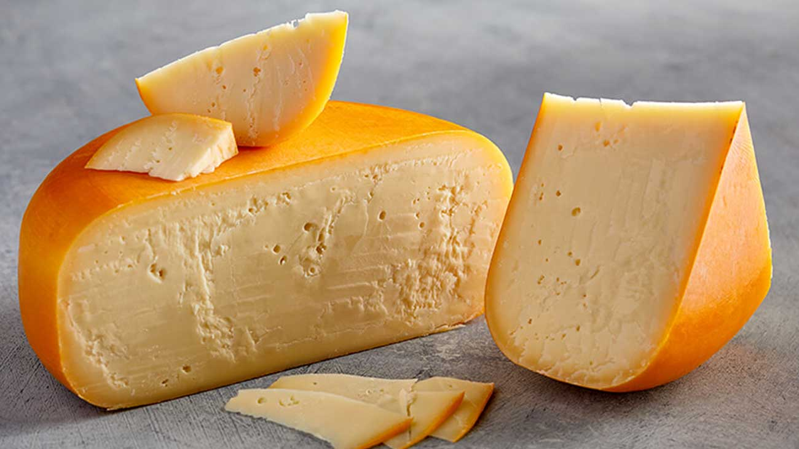

SajtOK - A Sajtok birodalma!
Gouda
- Eredet: Hollandia, Gouda város környékéről származik.
- Elkészítési mód: Gouda tehéntejből készül, és többféle érlelési idejű változata van: a fiatal gouda csak néhány hétig érlelődik, míg az idősített gouda akár több mint egy évig. A sajtot formába öntik, majd sós fürdőbe helyezik, ahol íze kifejlődik.
- Tárolás: Légmentesen zárva, hűvös helyen tartják. Felvágott állapotban hűtőben érdemes tárolni, de visszazárva, hogy ne érje a levegő, és ne száradjon ki.
- Érdekesség: Gouda jellegzetes, diós íze és krémes állaga miatt népszerű szendvicsekben, salátákban, sőt, grillezve is kiváló.
